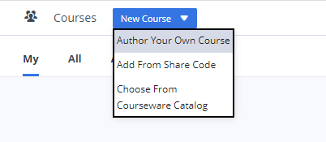
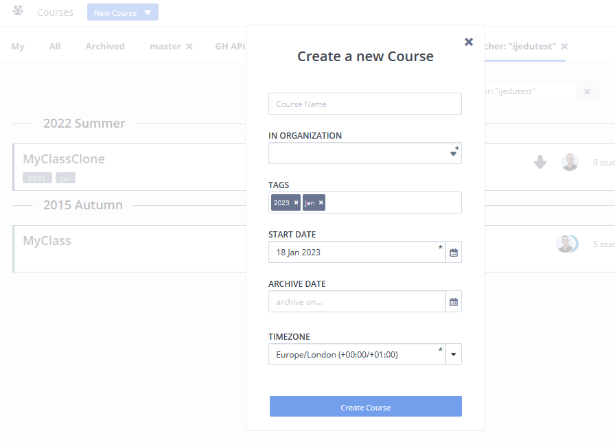
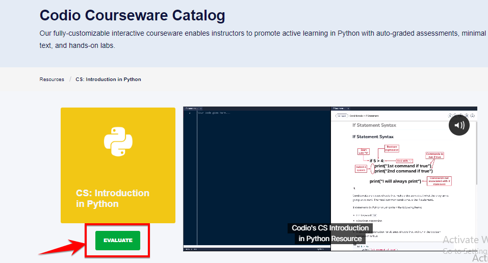
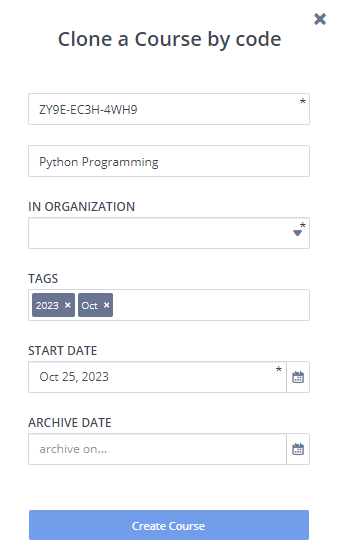

Create a New Course¶
To work with the course features in Codio, you must first set up a course for your students. You can author your own course or create a course using share code or add a course from Codio Courseware Catalog. Creating a course using share code is often used when you want to create a course from content outside your organization. You can also clone a course.
Author Your Own Course¶
To author your own course, follow these steps:
Sign in to your Codio account.
Click the Codio icon in the top left corner of the IDE, or click Courses in the left navigation menu on the dashboard to open the Courses page.
Click the New Course drop-down and choose Author Your Own Course.

Complete the fields on the Create a new Course form, including the Name, Start Date (optional), Archive Date (optional) and Tags (optional). If you wish to set a different timezone for your course you can do so from the Timezone drop down field

Note
Courses will also automatically archive when the archive date set for the course is reached. This date can be amended (or removed) in the course details area if you require the course to continue to be active
Click Create Course.
Your new course will appear in your Courses area.
Choose From Courseware Catalog¶
You can add a resource from Codio Courseware Catalog. These resources are completely editable and can be customized to suit your teaching context. You can mix-and-match different resources together and add your own content.
To add a resource from Codio Courseware Catalog, follow these steps:
Sign in to your Codio account.
Click the Codio icon in the top left corner of the IDE, or click Courses in the left navigation menu on the dashboard to open the Courses page.
Click the New Course drop-down and choose Choose From Courseware Catalog.
Select a resource you want from the resource list.
Click Evaluate button to add the selected resource into your Codio account.

Complete the fields on the Clone a Course by code form, including the Course Name, Organization, Start Date (optional), Archive Date (optional) and Tags (optional).

Note
Courses will also automatically archive when the archive date set for the course is reached. This date can be amended (or removed) in the course details area if you require the course to continue to be active
Click Create Course.